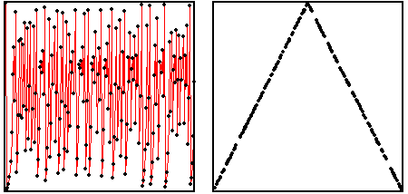

Here are the time series (left) and return map (right) of a
chaotic tent map. In general, if a sequence x1, x2, x3, ...
is generated by iterating a function, xi+1 = f(xi), the points
(xi, xi+1) of the return map fall on the graph of the
function y = f(x) because (xi, xi+1) =
(xi, f(xi)). If the return map of experimental data
lies along the graph of a function, then each data value depends only on its immediate
predecessor. That is, only one step of history is needed to determine the future.
More complicated structures of the return map suggest the relevance of a longer memory.